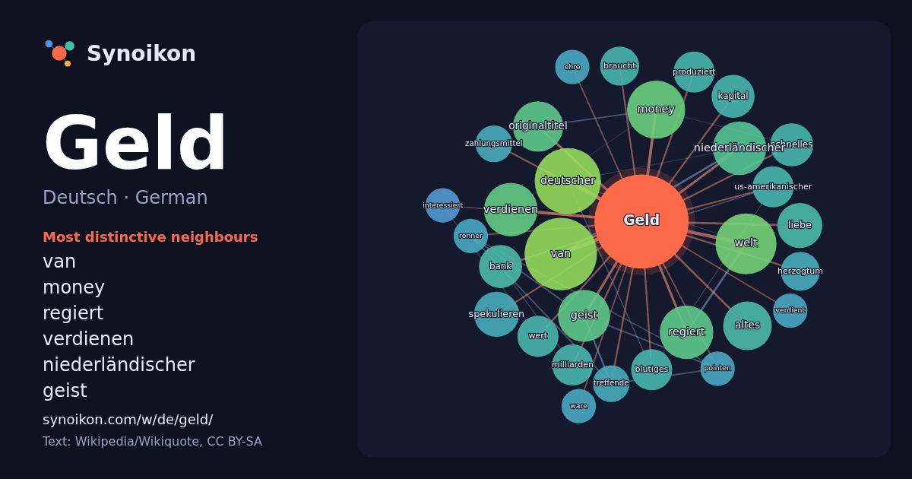

Deutsch · German · popular word
Geld
“money” · The words found around it in 1110 instances from German Wikipedia, Wikiquote.

Most distinctive neighbours
- van 22×
- money 21×
- regiert 18×
- verdienen 18×
- niederländischer 17×
- geist 15×
- originaltitel 15×
- welt 14×
- spekulieren 13×
- kapital 12×
- blutiges 11×
- deutscher 11×
- liebe 10×
- milliarden 9.7×
- braucht 9.7×
- altes 9.6×
- bank 9.6×
- schnelles 9.0×
- treffende 9.0×
- zahlungsmittel 8.9×
× = how many times more often than in general German Wikipedia text.
Most frequent neighbours
- van 31
- deutscher 26
- welt 22
- money 20
- film 19
- leben 18
- niederländischer 17
- regiert 17
- verdienen 17
- geist 16
- originaltitel 15
- altes 14
- titel 14
- deutsche 13
- liebe 12
- spekulieren 12
- bank 11
- deutschen 11
- kapital 11
- schnelles 11
In context
- Geld sind die in einer Gesellschaft allgemein anerkannten Tausch- und Zahlungsmittel. Das Wort stammt vom althochdeutschen gelt, das soviel bedeutete wie Wikipedia snippets · Geld
- Die Stadt Geldern liegt im unteren Niederrheingebiet im Westen des Landes Nordrhein-Westfalen und ist eine mittlere kreisangehörige Stadt des Kreises Wikipedia snippets · Geldern
- Geld steht für: Geld, Zahlungsmittel Geldkurs im Börsenhandel Geld (Film), deutscher Film von Doris Dörrie (1989) Geld ist der Familienname folgender Personen: Wikipedia snippets · Geld (Begriffsklärung)
- Meh’ Geld (Mo’ Money) ist eine US-amerikanische Action-Komödie aus dem Jahr 1992. Der Film ist auch unter dem Titel Mo' Money - Meh’ Geld bekannt. Ted Wikipedia snippets · Meh’ Geld
- Geld, Geld, Geld steht für: Geld Geld Geld – Zwei Milliarden gegen die Bank von England, deutscher Fernsehfilm von Eugen York (1965) Geld, Geld, Geld Wikipedia snippets · Geld, Geld, Geld
- Schnelles Geld steht für: Polizeiruf 110: Schnelles Geld, deutscher Kriminalfilm von 1983 aus der Reihe Polizeiruf 110 Schnelles Geld (2002), spanischer Wikipedia snippets · Schnelles Geld
- Das Duell um die Geld ist eine Fernsehsendung auf Joyn und ProSieben. Die von Oliver Kalkofe moderierte Spielshow wird von Florida Entertainment produziert Wikipedia snippets · Das Duell um die Geld
- Dumb Money – Schnelles Geld (Originaltitel Dumb Money) ist eine Tragikomödie von Craig Gillespie. Die Filmbiografie basiert auf einem Buch von Ben Mezrich Wikipedia snippets · Dumb Money – Schnelles Geld
More German words
- Arbeit
- Brücke
- Essen
- Familie
- Geschichte
- Gesundheit
- Gold
- Gott
- Kunst
- Leben
- Macht
- Natur
- Tod
- Wahrheit
- Wasser
- Wissenschaft
- Zug
Precomputed on 2026-10-09 with default settings (±5 words, medium corpus). The interactive map can refresh it with live data.